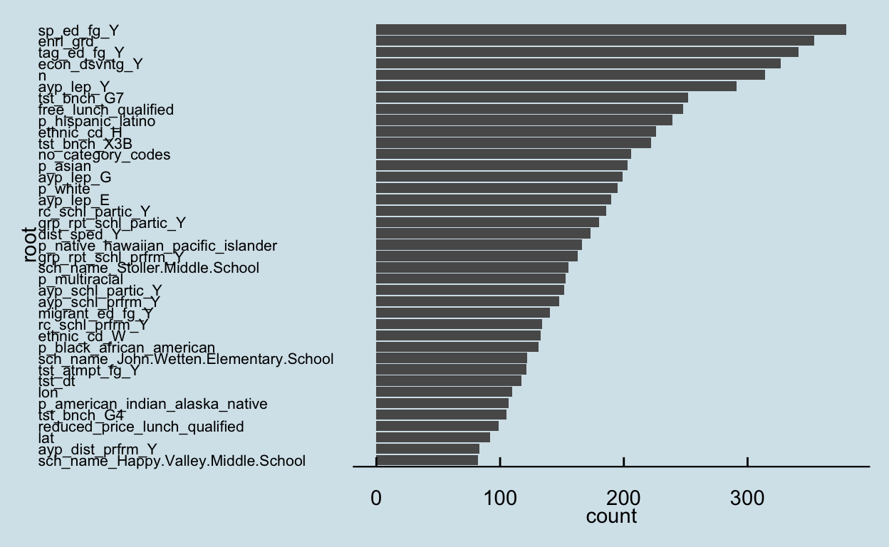

show code
knitr::include_graphics(here::here("images", "tree.jpeg"))

Intro
Tidyverses newest release has recently come together to form a cohesive suite of packages for modeling and machine learning, called {tidymodels}. The successor to Max Kuhns {caret} package, {tidymodels} allows for a tidy approach to your data from start to finish. Were going to walk through the basics for getting off the ground with {tidymodels} and demonstrate its application to three different tree-based methods for predicting student test scores. For further information about the package, you can visit https://www.tidymodels.org/.
Id also like to add here that I couldnt have done this post without collaboration with other UO doctoral students Cianna Bedford-Petersen & Brendan Cullen (Psychology PhD program, specifically). Last I checked, they also hosted this exact tutorial on Brendans and Ciannas websites, so if you liked this, check out some of their work.
Setup
show code
options(scipen = 17)
Load both the {tidyverse} and {tidymodels} packages into your environment. Well also load in the {skimr} package to help us with some descriptives for our data and a host of other packages that will be required to run our machine learning models.
Import the data
We use simulated data which approximates reading and math scores for ~189,000 3rd-8th grade students in Oregon public schools see this Kaggle page for details. For the purpose of demonstration, well be sampling 1% of the data with sample_frac() to keep computer processing time manageable. All school IDs in the data are real, so we can use that information to link the data with other sources. Specifically, were also going to pull in some data on student enrollment in free and reduced lunch from the National Center for Education Statistics and some ethnicity data from the Oregon Department of Education.
show code
set.seed(100)
# import data and perform initial cleaning
# initial cleaning steps include:
# *recode NA's for lang_cd and ayp_lep to more meaningful values
# *remove vars with entirely missing data
# Note: the data is called 'train.csv', but we will actually further split this into its own training and testing data
dat <- read_csv("train.csv") %>%
select(-classification) %>% # remove this variable because it's redundant with `score`
mutate(lang_cd = ifelse(is.na(lang_cd), "E", lang_cd),
ayp_lep = ifelse(is.na(ayp_lep), "G", ayp_lep)) %>%
sample_frac(.01) %>% # sample 1% of the data to reduce run time
janitor::remove_empty(c("rows", "cols")) %>%
drop_na() %>%
select_if(~length(unique(.x)) > 1)
# import fall membership report ethcnicity data and do some basic cleaning and renaming
sheets <- readxl::excel_sheets("fallmembershipreport_20192020.xlsx")
ode_schools <- readxl::read_xlsx("fallmembershipreport_20192020.xlsx",
sheet = sheets[4])
ethnicities <- ode_schools %>%
select(attnd_schl_inst_id = `Attending School ID`,
attnd_dist_inst_id = `Attending District Institution ID`,
sch_name = `School Name`,
contains("%")) %>%
janitor::clean_names()
names(ethnicities) <- gsub("x2019_20_percent", "p", names(ethnicities))
# join ethnicity data with original dataset
dat <- left_join(dat, ethnicities)
# import and tidy free and reduced lunch data
frl <- rio::import("https://nces.ed.gov/ccd/Data/zip/ccd_sch_033_1718_l_1a_083118.zip",
setclass = "tbl_df") %>%
janitor::clean_names() %>%
filter(st == "OR") %>%
select(ncessch, lunch_program, student_count) %>%
mutate(student_count = replace_na(student_count, 0)) %>%
pivot_wider(names_from = lunch_program,
values_from = student_count) %>%
janitor::clean_names() %>%
mutate(ncessch = as.double(ncessch))
# import student counts for each school across grades
stu_counts <- rio::import("https://github.com/datalorax/ach-gap-variability/raw/master/data/achievement-gaps-geocoded.csv", setclass = "tbl_df") %>%
filter(state == "OR" & year == 1718) %>%
count(ncessch, wt = n) %>%
mutate(ncessch = as.double(ncessch))
# join frl and stu_counts data
frl <- left_join(frl, stu_counts)
# add frl data to train data
dat <- left_join(dat, frl)
After loading in our three datasets, well join them together to make one cohesive data set to use for modelling. After joining, the data contains both student-level variables (e.g.gender, ethnicity, enrollment in special education/talented and gifted programs, etc.) and district-level variables (e.g.school longitude and latitude, proportion of students who qualify for free and reduced-price lunch, etc.), all of which will be included for each 3 of our {tidymodels} tree-based examples.
For a more complete description of the variables, you can download the data dictionary here.
Explore the data
Well use the skim() function from {skimr} to take a closer look at our variables. Many numeric predictors are clearly non-normal (see histograms below), but this is no problem as tree-based methods are robust to non-normality.
show code
dat %>%
select(-contains("id"), -ncessch, -missing, -not_applicable) %>% # remove ID and irrelevant variables
mutate(tst_dt = lubridate::as_date(lubridate::mdy_hms(tst_dt))) %>% # covert test date to date
modify_if(is.character, as.factor) %>% # convert character vars to factors
skim() %>%
select(-starts_with("numeric.p")) # remove quartiles
| Name | Piped data |
| Number of rows | 1857 |
| Number of columns | 41 |
| _______________________ | |
| Column type frequency: | |
| Date | 1 |
| factor | 25 |
| numeric | 15 |
| ________________________ | |
| Group variables | None |
Variable type: Date
| skim_variable | n_missing | complete_rate | min | max | median | n_unique |
|---|---|---|---|---|---|---|
| tst_dt | 0 | 1 | 2018-03-16 | 2018-06-07 | 2018-05-18 | 47 |
Variable type: factor
| skim_variable | n_missing | complete_rate | ordered | n_unique | top_counts |
|---|---|---|---|---|---|
| gndr | 0 | 1 | FALSE | 2 | M: 939, F: 918 |
| ethnic_cd | 0 | 1 | FALSE | 7 | W: 1151, H: 458, M: 100, A: 79 |
| tst_bnch | 0 | 1 | FALSE | 6 | G6: 343, 1B: 330, G4: 304, G7: 304 |
| migrant_ed_fg | 0 | 1 | FALSE | 2 | N: 1793, Y: 64 |
| ind_ed_fg | 0 | 1 | FALSE | 2 | N: 1842, Y: 15 |
| sp_ed_fg | 0 | 1 | FALSE | 2 | N: 1614, Y: 243 |
| tag_ed_fg | 0 | 1 | FALSE | 2 | N: 1759, Y: 98 |
| econ_dsvntg | 0 | 1 | FALSE | 2 | Y: 1100, N: 757 |
| ayp_lep | 0 | 1 | FALSE | 10 | G: 1471, F: 164, Y: 72, E: 58 |
| stay_in_dist | 0 | 1 | FALSE | 2 | Y: 1811, N: 46 |
| stay_in_schl | 0 | 1 | FALSE | 2 | Y: 1803, N: 54 |
| dist_sped | 0 | 1 | FALSE | 2 | N: 1846, Y: 11 |
| trgt_assist_fg | 0 | 1 | FALSE | 3 | N: 1773, Y: 83, y: 1 |
| ayp_schl_partic | 0 | 1 | FALSE | 2 | Y: 1846, N: 11 |
| ayp_dist_prfrm | 0 | 1 | FALSE | 2 | Y: 1803, N: 54 |
| ayp_schl_prfrm | 0 | 1 | FALSE | 2 | Y: 1785, N: 72 |
| rc_schl_partic | 0 | 1 | FALSE | 2 | Y: 1846, N: 11 |
| rc_dist_prfrm | 0 | 1 | FALSE | 2 | Y: 1803, N: 54 |
| rc_schl_prfrm | 0 | 1 | FALSE | 2 | Y: 1785, N: 72 |
| lang_cd | 0 | 1 | FALSE | 2 | E: 1815, S: 42 |
| tst_atmpt_fg | 0 | 1 | FALSE | 2 | Y: 1853, P: 4 |
| grp_rpt_schl_partic | 0 | 1 | FALSE | 2 | Y: 1846, N: 11 |
| grp_rpt_dist_prfrm | 0 | 1 | FALSE | 2 | Y: 1845, N: 12 |
| grp_rpt_schl_prfrm | 0 | 1 | FALSE | 2 | Y: 1834, N: 23 |
| sch_name | 1 | 1 | FALSE | 699 | Hig: 14, Jud: 14, Hou: 13, Fiv: 11 |
Variable type: numeric
| skim_variable | n_missing | complete_rate | mean | sd | hist |
|---|---|---|---|---|---|
| enrl_grd | 0 | 1 | 5.44 | 1.69 | |
| score | 0 | 1 | 2495.34 | 115.19 | |
| lat | 0 | 1 | 44.79 | 0.99 | |
| lon | 0 | 1 | -122.51 | 1.16 | |
| p_american_indian_alaska_native | 1 | 1 | 0.01 | 0.06 | |
| p_asian | 1 | 1 | 0.04 | 0.07 | |
| p_native_hawaiian_pacific_islander | 1 | 1 | 0.01 | 0.01 | |
| p_black_african_american | 1 | 1 | 0.02 | 0.04 | |
| p_hispanic_latino | 1 | 1 | 0.25 | 0.18 | |
| p_white | 1 | 1 | 0.60 | 0.20 | |
| p_multiracial | 1 | 1 | 0.06 | 0.03 | |
| free_lunch_qualified | 0 | 1 | 231.23 | 147.55 | |
| reduced_price_lunch_qualified | 0 | 1 | 39.86 | 24.77 | |
| no_category_codes | 0 | 1 | 271.09 | 165.44 | |
| n | 0 | 1 | 816.07 | 536.55 |
While most of our predictors are categorical, we can use {corrplot} to better visualize the relationships among the numeric variables.
show code
dat %>%
select(-contains("id"), -ncessch, -missing, -not_applicable) %>%
select_if(is.numeric) %>%
select(score, everything()) %>%
cor(use = "complete.obs") %>%
corrplot::corrplot()
Split data and resample
The first step of our analysis is to split our data into two separate sets: a training set and a testing set. The training set is used to train a model and, if desired, to adjust (i.e., tune) the models hyperparameters before evaluating its final performance on our test data. By allowing us to test a model on a new sample, we assess out of sample accuracy (i.e., unseen data-what all predictive models are interested in) and limit overfitting to the training set. We can do this efficiently with the initial_split() function. This comes from the {rsample} package, which is part of the {tidymodels} package that we already loaded. Defaults put 75% of the data in the training set and 25% in the test set, but this can be adjusted with the prop argument. Then, well extract the training data from our split object and assign it a name.
To further prevent over-fitting, well resample our data using vfold_cv(). This function outputs k-fold cross-validated versions of our training data, where k = the number of times we resample (unsure why v- is used instead of k- here). By using k = 10 data sets, we get a better estimate of the models out-of-sample accuracy. On top of decreasing bias from over-fitting, this is essential when tuning hyperparameters (though we plan to apply defaults and not tune here, for brevity). Though our use of 10-fold cross validation is both frequently used and effective, it should be noted that other methods (e.g., bootstrap resampling) or other k-values are sometimes used to accomplish the same goal.
show code
# split the data
split <- initial_split(dat)
# extract the training data
train <- training(split)
# resample the data with 10-fold cross-validation (10-fold by default)
cv <- vfold_cv(train)
Pre-processing
Before we add in our data to the model, were going to set up an object that pre-processes our data. This is called a recipe. To create a recipe, youll first specify a formula for your model, indicating which variable is your outcome and which are your predictors. Using ~. here will indicate that we want to use all variables other than score as predictors. Then, we can specify a series of pre-processing steps for our data that directs our recipe to assign our variables a role or performs feature engineering steps. Pre-processing may be sound uncommon, but if youve ever used lm() (or several other R functions) youve done some of this by simply calling the function (e.g., automatic dummy-coding to handle categorical data). This is beneficial because it gives the analyst more control, despite adding complexity to the process.
A complete list of possible pre-processing steps can be found here: https://www.tidymodels.org/find/recipes/
show code
rec <- recipe(score ~ ., train) %>%
step_mutate(tst_dt = as.numeric(lubridate::mdy_hms(tst_dt))) %>% # convert `test date` variable to a date
update_role(contains("id"), ncessch, new_role = "id vars") %>% # declare ID variables
step_nzv(all_predictors(), freq_cut = 0, unique_cut = 0) %>% # remove variables with zero variances
step_novel(all_nominal()) %>% # prepares test data to handle previously unseen factor levels
step_unknown(all_nominal()) %>% # categorizes missing categorical data (NA's) as `unknown`
step_medianimpute(all_numeric(), -all_outcomes(), -has_role("id vars")) %>% # replaces missing numeric observations with the median
step_dummy(all_nominal(), -has_role("id vars")) # dummy codes categorical variables
Create a model
The last step before bringing in our data is to specify our model. This will call upon functions from the {parsnip} package, which standardizes language for specifying a multitude of statistical models. There are a few core elements that you will need to specify for each model
The type of model
This indicates what type of model you choose to fit, each of which will be a different function. Well be focusing on decision tree methods using bag_tree(), random_forest(), and boost_tree(). A full list of models can be found here https://www.tidymodels.org/find/parsnip/
The engine
set_engine() calls the package to support the model you specified above.
The mode
set_mode() indicates the type of prediction youd like to use in your model, youll choose between regression and classification. Since we are looking to predict student scores, which is a continuous predictor, well be choosing regression.
The arguments
set_args() allows you to set values for various parameters for your model, each model type will have a specific set of parameters that can be altered. For these parameters, you can either set a particular value or you can use the tune function to search for the optimal value of each parameter. Tuning requires a few extra steps, so we will leave the default arguments for clarity. For more information on tuning check out https://tune.tidymodels.org/.
Create a workflow
Up to this point weve been setting up a lot of individual elements and now it is time to combine them to create a cohesive framework, called a workflow, so we can run our desired models. First, well use the workflow() command and then well pulling the recipe and model we already created. The next section shows three examples of specifying models and creating a workflow for different decision tree methods.
Model Examples
Bagged trees
A bagged tree approach creates multiple subsets of data from the training set which are randomly chosen with replacement. Each subset of data is used to train a given decision tree. In the end, we have an ensemble of different models. The predictions from all the different trees are averaged together, giving us a stronger prediction than one tree could independently.
Specify model
Create workflow
show code
wflow_bag <- workflow() %>%
add_recipe(rec) %>%
add_model(mod_bag)
Fit the model
Visualize
The plot below shows the root nodes from a bagged tree made of 100 trees (10 folds x 10 bootstrapped resamples). Root nodes are the 1st node in a decision tree, and they are determined by which variable best optimizes a loss function (e.g., minimizes mean square error [MSE] for continuous outcomes or Gini Index for categorical outcomes). Put roughly, the most common root nodes can be thought of as the most important predictors.
show code
# extract roots
bag_roots <- function(x){
x %>%
select(.extracts) %>%
unnest(cols = c(.extracts)) %>%
mutate(models = map(.extracts,
~.x$model_df)) %>%
select(-.extracts) %>%
unnest(cols = c(models)) %>%
mutate(root = map_chr(model,
~as.character(.x$fit$frame[1, 1]))) %>%
select(root)
}
# plot
bag_roots(fit_bag) %>%
ggplot(mapping = aes(x = fct_rev(fct_infreq(root)))) +
geom_bar() +
coord_flip() +
labs(x = "root", y = "count") +
theme(axis.text.y = element_text(size = 9, angle = 30))
Random forest
Random forest is similar to bagged tree methodology but goes one step further. In addition to taking random subsets of data, the model also draws a random selection of features. Instead of utilizing all features, the random subset of features allows more predictors to be eligible root nodes. This is particularly useful for handling high dimensionality data (e.g., have more variables than participants/cases).
Specify the model
show code
set.seed(100)
mod_rf <-rand_forest() %>%
set_engine("ranger",
num.threads = parallel::detectCores(),
importance = "permutation",
verbose = TRUE) %>%
set_mode("regression") %>%
set_args(trees = 1000)
Create workflow
show code
wflow_rf <- workflow() %>%
add_model(mod_rf) %>%
add_recipe(rec)
Fit the model
Visualize
The plot below shows the root nodes from a random forest with 1000 trees (specified using set_args(trees = 1000) in the parsnip model object).
show code
# extract roots
rf_tree_roots <- function(x){
map_chr(1:1000,
~ranger::treeInfo(x, tree = .)[1, "splitvarName"])
}
rf_roots <- function(x){
x %>%
select(.extracts) %>%
unnest(cols = c(.extracts)) %>%
mutate(fit = map(.extracts,
~.x$fit$fit$fit),
oob_rmse = map_dbl(fit,
~sqrt(.x$prediction.error)),
roots = map(fit,
~rf_tree_roots(.))
) %>%
select(roots) %>%
unnest(cols = c(roots))
}
# plot
rf_roots(fit_rf) %>%
group_by(roots) %>%
count() %>%
arrange(desc(n)) %>%
filter(n > 75) %>%
ggplot(aes(fct_reorder(roots, n), n)) +
geom_col() +
coord_flip() +
labs(x = "root", y = "count") +
theme_economist(horizontal = F) +
theme(axis.text.y = element_text(size = 8))

Boosted trees
Boosted trees, like bagged trees, are an ensemble model. Instead of applying successive models to resampled data and pooling estimates, boosted trees fit the next tree to the residuals (i.e., error term) of the prior tree. The goal is to minimize residual error through multiple trees, and is typically done with fairly shallow decision tree (i.e., 1-6 splits in each tree). Though each model is only slightly improving the error rate, the sequential use of many shallow trees makes computationally efficient (i.e.reduced run time) and highly accurate predictions.
Specify the model
show code
mod_boost <- boost_tree() %>%
set_engine("xgboost", nthreads = parallel::detectCores()) %>%
set_mode("regression")
Create workflow
show code
wflow_boost <- workflow() %>%
add_recipe(rec) %>%
add_model(mod_boost)
Fit the model
Visualize
One of the few downfalls of {tidymodels} is its (current) inability to plot these tree-based models. For the past two models, it was simpler to extract root nodes and plot them, but their interpretation (as were fitting to residuals instead of data sets) are not straightforward. For that reason, we dont have any pretty plots here. Instead, well skip to evaluating the metrics of all models.
Evaluate metrics
After running these three models, its time to evaluate their performance. We can do this with tune::collect_metrics(). The table below shows the estimate of the out-of-sample performance for each of our 3 models.
show code
collect_metrics(fit_bag) %>%
bind_rows(collect_metrics(fit_rf)) %>%
bind_rows(collect_metrics(fit_boost)) %>%
filter(.metric == "rmse") %>%
mutate(model = c("bag", "rf", "boost")) %>%
select(model, everything()) %>%
knitr::kable()
| model | .metric | .estimator | mean | n | std_err |
|---|---|---|---|---|---|
| bag | rmse | standard | 98.39324 | 10 | 2.618597 |
| rf | rmse | standard | 96.16870 | 10 | 2.248261 |
| boost | rmse | standard | 95.35888 | 10 | 2.764773 |
Here, we are faced with a common problem in the machine learning world: choosing between models that perform similarly (see overlapping standard errors). Whether we would prefer random forests or bagged trees may depend on computational efficiency (i.e., time) or other factors. In practice, tuning several hyperparameters may have made one model clearly preferable over the others, but in our case - relying on all defaults - we would probably have similar performance with both models on a new data set and would prefer random forest or boosted tree models for their efficiency.
Out-of-sample performance
The final step is to apply each trained model to our test data using last_fit().
show code
# bagged trees
final_fit_bag <- last_fit(
wflow_bag,
split = split
)
# random forest
final_fit_rf <- last_fit(
wflow_rf,
split = split
)
# boosted trees
final_fit_boost <- last_fit(
wflow_boost,
split = split
)
The table below shows the actual out-of-sample performance for each of our 3 models.
show code
# show performance on test data
collect_metrics(final_fit_bag) %>%
bind_rows(collect_metrics(final_fit_rf)) %>%
bind_rows(collect_metrics(final_fit_boost)) %>%
filter(.metric == "rmse") %>%
mutate(model = c("bag", "rf", "boost")) %>%
select(model, everything()) %>%
knitr::kable()
| model | .metric | .estimator | .estimate |
|---|---|---|---|
| bag | rmse | standard | 93.36504 |
| rf | rmse | standard | 91.18114 |
| boost | rmse | standard | 94.22609 |
After applying our 3 trained models to the unseen test data, it looks like random forest is the winner since it has the lowest RMSE. In this example, we only used 1% of the data to train these models, which could make it difficult to meaningfully compare their performance. However, the random forest model also results in the best out-of-sample prediction (RMSE = 83.47) when using all of the available data, which we did for the Kaggle competition.